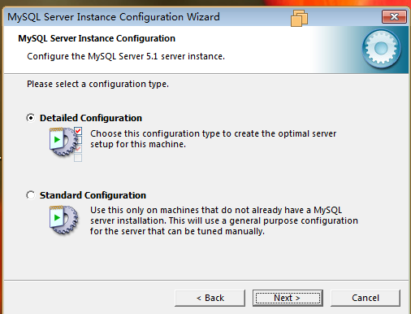
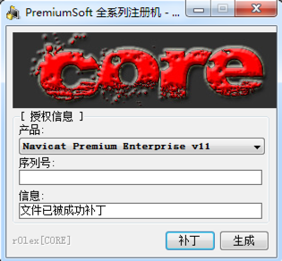

服务器端安装
1、解压mysql-essential-5.1.55-win32.zip，双击运行mysql-essential-5.1.55-win32.msi
2、点击next
3、选择accept，点击next
4、点击next

5、点击install
6、点击next
7、点击next
8、点击finish，开始配置MySQL
9、点击next

10、点击next
11、点击next
12、点击next
13、点击next
14、点击next
15、勾选 add firewall，点击next
16、选择最下面选项，下拉框里选择utf8，点击next
17、点击next
18、输入两次密码，勾选 enable root，点击next
19、点击execute
20、点击finish，配置完成，MySQL服务端已经配置成开机自启动，且已经启动
配置
- 配置文件位置为C:\Program Files (x86)\MySQL\MySQL Server 5.1\my.ini
服务端的启动、停止、重启
打开控制面板
在控制面板中以小图标显示，打开管理工具
在管理工具中，打开服务，找到MySQL，右键点击，能看到启动、停止、重启功能
客户端
命令行客户端
MySQL服务端安装后，自带了命令行的客户端，在系统开始菜单->所有程序->MySQL-MySQL Server 5.1目录下，点击MySQL Command Line Client，弹出如下图所示窗口
输入安装MySQL时设置的密码，既连接上MySQL的服务端
按ctrl+c或输入如下命令退出
quit 或者 exit
图形化界面客户端navicat
双击navicat112_premium_cs_x86.exe，一路下一步，安装完成
注册navicat（不要打开navicat程序）
1、解压navicat注册机.7z，右键点击navicat_chs.exe，以管理员身份运行

2、在产品下拉框中选择 Navicat Premium Enterprise v11
3、点击补丁按钮，在弹出的窗口中，找到navicat的安装目录C:\Program Files (x86)\PremiumSoft\Navicat Premium，选择navicat.exe，点击打开按钮
4、此时注册机会显示成功补丁信息，如下图

5、点击生成按钮，在弹出的窗口中，选择一个目录，用来保存生成的文件，点击保存按钮（生成的文件会出现在navicat_chs.exe同目录下）
6、此时注册机会显示注册序列号，如下图
7、打开navicat程序，点击注册按钮
8、把刚才生成的序列号复制粘贴过来，不要点击激活按钮
9、按住Ctrl+Shilft键不松开，再点击激活按钮，弹出如下窗口
10、选择license_file，点击打开按钮(license_file在navicat注册机目录中)
11、navicat注册成功